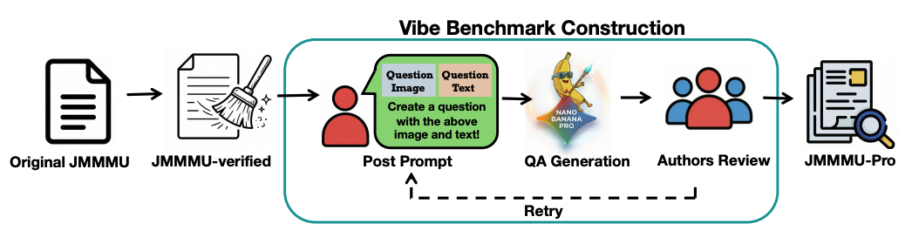
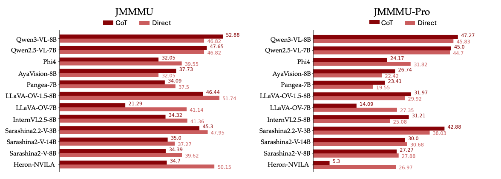
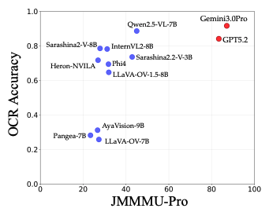
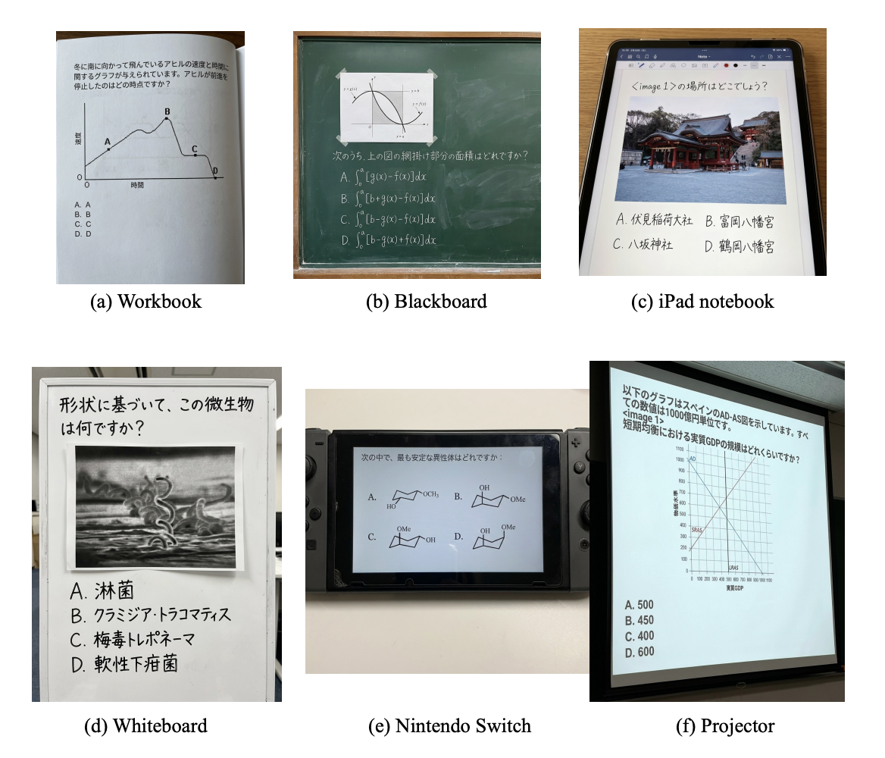

This paper introduces JMMMU-Pro, an image-based Japanese Multi-discipline Multimodal Understanding Benchmark, and Vibe Benchmark Construction, a scalable construction method.
Following the evolution from MMMU to MMMU-Pro, JMMMU-Pro extends JMMMU by composing the question image and question text into a single image, thereby creating a benchmark that requires integrated visual–textual understanding through visual perception.
Following the evolution from MMMU to MMMU-Pro, JMMMU-Pro extends JMMMU by composing the question image and question text into a single image, thereby creating a benchmark that requires integrated visual–textual understanding through visual perception.
To build JMMMU-Pro, we propose Vibe Benchmark Construction, a methodology in which an image generative model (e.g., Nano Banana Pro) produces candidate visual questions, and humans verify the outputs and, when necessary, regenerate with adjusted prompts to ensure quality. By leveraging Nano Banana Pro's highly realistic image generation capabilities and its ability to render clean Japanese text, we construct a high-quality benchmark at low cost, covering a wide range of background and layout designs.
Experimental results show that all open-source LMMs struggle substantially with JMMMU-Pro, underscoring JMMMU-Pro as an important benchmark for guiding future efforts in the open-source community. We believe that JMMMU-Pro provides a more rigorous evaluation tool for assessing the Japanese capabilities of LMMs and that our Vibe Benchmark Construction also offers an efficient guideline for future development of image-based VQA benchmarks.
Vibe Benchmark Construction is a methodology in which an image generation model plays the primary role in producing the VQA problem images, while humans only verify the outputs and adjust the prompts when necessary to ensure quality.
Although previous VQA benchmarks have used synthetic images generated by image generation models, these models have played only a supplementary role, producing just the visual part while the question text still had to be created separately by humans or by an LMM, incurring additional cost.
In contrast, the key distinction of our proposed Vibe Benchmark Construction is that the entire VQA creation process is carried out by the image generation model, with humans intervening solely for verification and prompt refinement.
This paradigm is particularly effective for image-based VQA, where humans cannot easily edit content directly inside the image in the same way as text-based QA. By letting the model handle generation and restricting human effort to adjusting the prompt until a satisfactory image is produced, the method enables efficient and scalable construction of benchmarks, especially in domains like image-based VQA, where dataset creation is difficult. A more detailed comparison with existing work is provided in the related work section.
The following figures illustrate the overall results on JMMMU-Pro.

As shown in the results table, open-source LMMs perform poorly on JMMMU-Pro, with the best model, Qwen3-VL-8B, achieving only 45.83, indicating substantial room for improvement. Furthermore, nine models perform less than 32%, close to random guessing.
These results highlight that JMMMU-Pro poses a challenging and valuable benchmark for evaluating and advancing open-source LMMs.
As shown in the results table, most open-source LMMs, except for Qwen2.5-VL-7B, show a substantial decline in accuracy on JMMMU-Pro relative to JMMMU.
Moreover, when we compare the CS and CA subsets, we find that models with a clear performance gap between the JMMMU's two subsets are similarly low on both in JMMMU-Pro. This suggests that their weakness lies in a fundamental lack of vision-side understanding, rather than in the type of question.
These results demonstrate that JMMMU-Pro provides valuable feedback to model developers when used in comparison with JMMMU.
As shown in the results table, closed-source LMMs obtain notably high scores on JMMMU-Pro. This indicates that these models already possess the ability to seamlessly integrate visual and textual information and interpret them through visual perception.
Importantly, the strong performance of closed-source models does not diminish the value of JMMMU-Pro. Instead, it highlights the crucial role of JMMMU-Pro as a benchmark for guiding the development of open-source LMMs. Given the considerable performance gap between closed-source and open-source LMMs, reducing this gap is an essential goal for the community.
We examine the effectiveness of Chain-of-Thought (CoT) prompting on JMMMU-Pro and JMMMU. The results are shown in the figure below. These results indicate that the effectiveness of CoT varies depending on the model and the evaluation setting for both JMMMU-Pro and JMMMU.
For example, on JMMMU-Pro, 7 out of the 12 LMMs achieve higher performance with CoT prompting, whereas on JMMMU, only 3 models benefit from CoT. Moreover, when examined on a per-model basis, LMMs such as Pangea-7B, LLaVA-OV-1.5-8B, InternVL2.5-8B, and Sarashina2.2-V-3B show different prompt preferences between JMMMU and JMMMU-Pro.
These findings suggest that optimal prompting strategies must be tailored to each model and each task, rather than relying on a single prompting approach across settings.
We hypothesize that the primary cause of performance degradation on JMMMU-Pro is the inability of current LMMs to perform Japanese Optical Character Recognition (OCR). To examine this hypothesis, we compute the correlation between OCR performance and JMMMU-Pro accuracy across several LMMs.
The results are shown in the figure below. The correlation coefficient between OCR accuracy and JMMMU-Pro accuracy is 0.593. As illustrated in the figure, there is indeed a positive correlation between the two. However, high OCR ability does not necessarily translate directly into high JMMMU-Pro accuracy. For example, while Heron-NVILA and Sarashina2.2-V are comparable for OCR performance, the performance for JMMMU-Pro differs a lot.
This indicates that solving JMMMU-Pro demands not only strong OCR capabilities, but also the ability to interpret and reason over language and vision in an integrated manner through visual perception.
We present samples from JMMMU-Pro in the figure below. As shown in this figure, JMMMU-Pro includes images with a wide variety of backgrounds, reflecting the diversity in real-world scenarios.
@article{miyai2025jmmmu-pro,
author = {Miyai, Atsuyuki and Onohara, Shota and Baek, Jeonghun and Aizawa, Kiyoharu},
title = {JMMMU-Pro: Vibe Benchmark Construction of Image-based Japanese Multi-discipline Multimodal Understanding Benchmark},
journal = {TBD},
year = {2025},
}